Префектура Исикава · Комацу · ремёсла
Комацу руками мастеров: глина для Кутани, стихи на фарфоре, жаккард и кованое железо
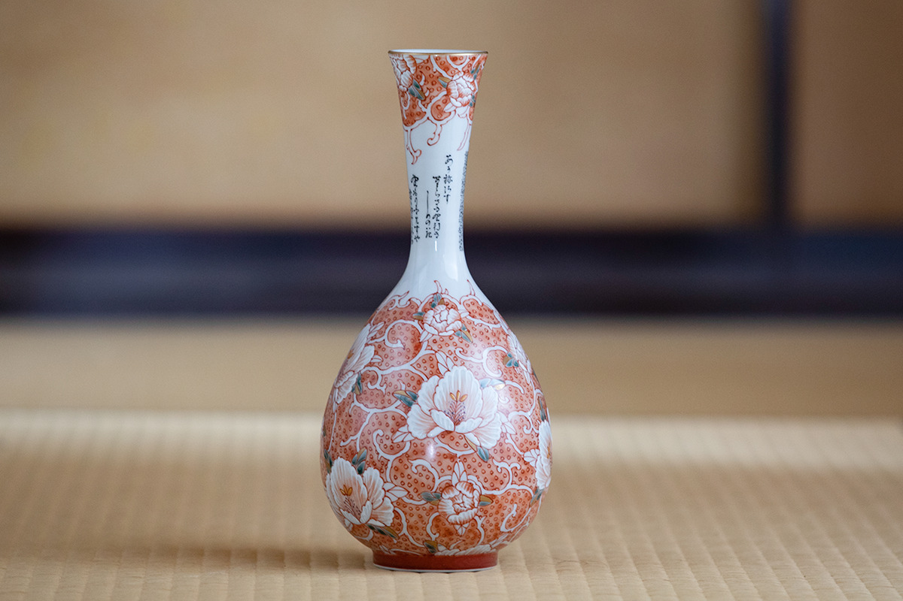
Комацу на юге префектуры Исикава знают как родину мировой марки строительной техники, но делать вещи здесь умели задолго до заводов. В 2024 году до города дошёл синкансэн Хокурику, и Комацу стал ближе к путешественникам.
История
Город, который вырос из камня
Комацу стоит на юге префектуры Исикава и считается главным промышленным городом префектуры. Здесь основана «Комацу», один из крупнейших в мире производителей строительной и горной техники. Но корни здешнего ремесла гораздо старше, и начинаются они с камня. Около 20 млн лет назад вулканы на побережье Японского моря оставили в этих местах золото, медь, агат и опал.
Около 2300 лет назад, в эпоху Яёй, мастера Комацу делали украшения из зелёной яшмы, которой тут было много. Обрабатывали её с поразительным для того времени умением, и эти вещи ценили знатные люди по всей стране. С эпохи курганов здесь начали резать мягкий вулканический туф на строительный камень. Уважение к природе, которое давал камень, перешло в почитание горы Хакусан: по преданию, её открыли для паломников около 1300 лет назад, и для жителей округи она до сих пор остаётся святыней.
Новая глава началась в 1640 году. В замок Комацу удалился на покой Тосицунэ Маэда (1594–1658), третий глава дома Маэда, правившего княжеством Кага. За ним в город потянулись ремесленники и торговцы, и Комацу стал центром южной Каги. Тосицунэ поощрял чайную церемонию и театр но, восстановил храм Натадэра и покровительствовал производству чая, шёлка и черепицы.
В эпоху Мэйдзи (1868–1912) прославился фарфор Кутани-яки, который делали из камня Ханасака. Этот камень когда-то был риолитом: 20 000 лет назад из него делали каменные орудия, а потом он переродился в фарфоровый камень. Кутани-яки стал известен в мире под именем «Джапан Кутани». Ниже мы рассказываем о мастерах, которые продолжают это ремесло сегодня, и о местах, куда за ним стоит ехать.
Глина
HANASAKA: фарфор Кутани без росписи
Главная черта Кутани-яки, японского фарфора с росписью эмалями, известного с эпохи Эдо, это яркая надглазурная живопись в пяти цветах: красном, жёлтом, зелёном, фиолетовом и тёмно-синем. Посуда HANASAKA выглядит наоборот: она простая, однотонная и матовая. Этой маркой, появившейся в 2013 году, Кутани-яки показал, что может быть и другим.
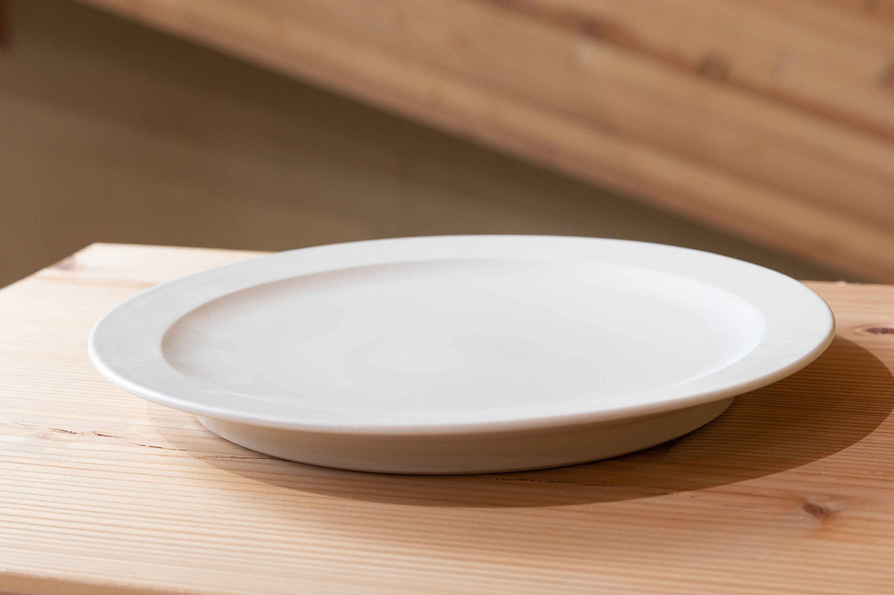
Марку создала Taniguchi Seidosho, глиняная мастерская, которая около 70 лет готовит сырьё для Кутани-яки. Фарфор Кутани делают из камня Ханасака, найденного около 1800 года в деревне Ханасака на территории нынешнего Комацу. Мастерская дробит камень, очищает его от примесей и смешивает массу под разные задачи. Без таких мастерских Кутани-яки просто не существовало бы.
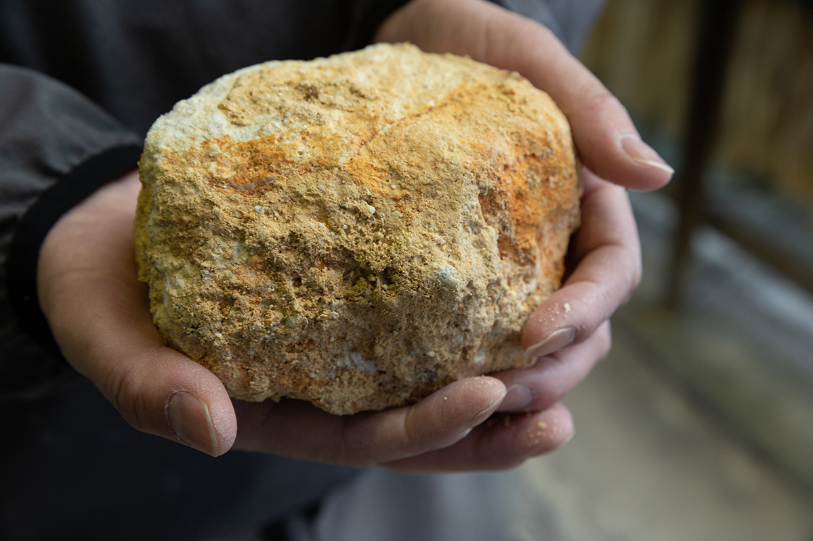
«Кутани-яки ценят как художественное ремесло. Но нам хотелось, чтобы люди знали и тех, кто живёт в Комацу и делает основу: мастеров печей, которые прекрасно обжигают изделия, и тех, кто готовит глину»
Коити Танигути, глава мастерской в третьем поколении
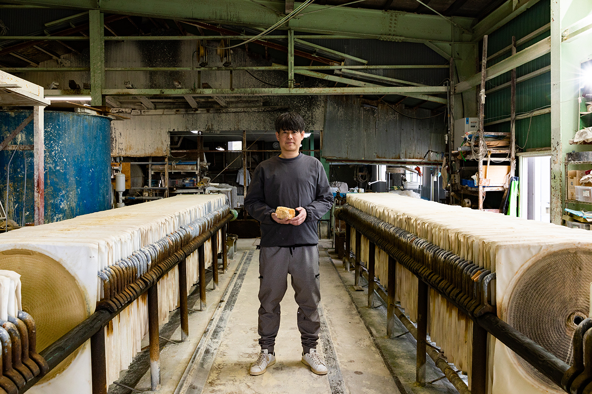
Каждую вещь HANASAKA вытягивают на гончарном круге вручную мастера печей, на которых держится традиционный Кутани-яки. Главная серия Une сделана только из глины Кутани. Её покрывают собственной глазурью из остатков, которые при очистке камня отбрасывают как примеси. Так получается мягкий бежевый цвет, совсем не похожий на привычный Кутани-яки.
Больше десяти лет назад мастерская к тому же восстановила прозрачную глазурь для надглазурной росписи, которую в Комацу перестали делать. Так появился Кутани-яки, в котором все материалы из Комацу.
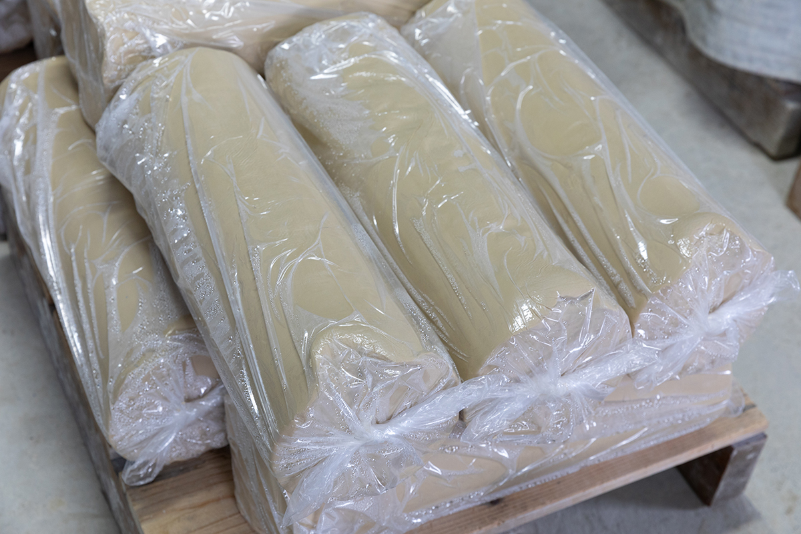
Taniguchi Seidosho
- Адрес
- префектура Исикава, Комацу, Вакасуги-мати, ва-124
- Телефон
- +81 761-22-5977
- Цены / Вход
- посещение по договорённости
Фарфор
«Тоё Тамура»: стихи тончайшей кистью
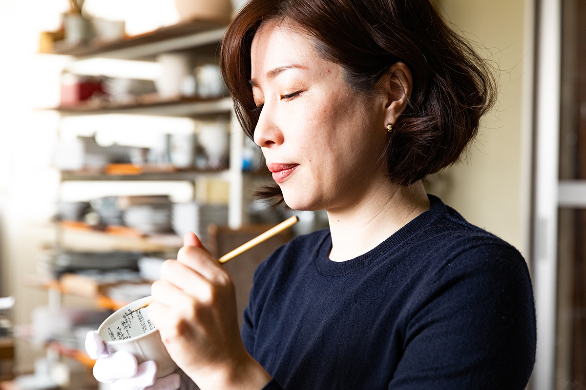
На изящной вазе с красной росписью плавным почерком выписано стихотворение из «Манъёсю», древнейшей японской антологии: «По лугам, где растёт пурпурный корень, по запретным лугам ты идёшь и машешь рукавом. Неужели не видит сторож?» Писать тончайшей кистью старинные стихи прямо по фарфору называют «Кутани мохицу сайдзи». Приём появился в эпоху Мэйдзи, на пике славы Кутани-яки, как надпись, подходящая к его тонкой росписи, и мастера всё время добивались всё более мелких и красивых знаков.
Мастерская «Тоё Тамура» хранит этот приём уже четыре поколения. Сэйто Тамура, мастер в четвёртом поколении, в двадцать с лишним лет пошла в ученицы к отцу, мастеру третьего поколения. После долгих лет учёбы она сама вытягивает вещь на круге, расписывает её надглазурными красками и пишет стихи.
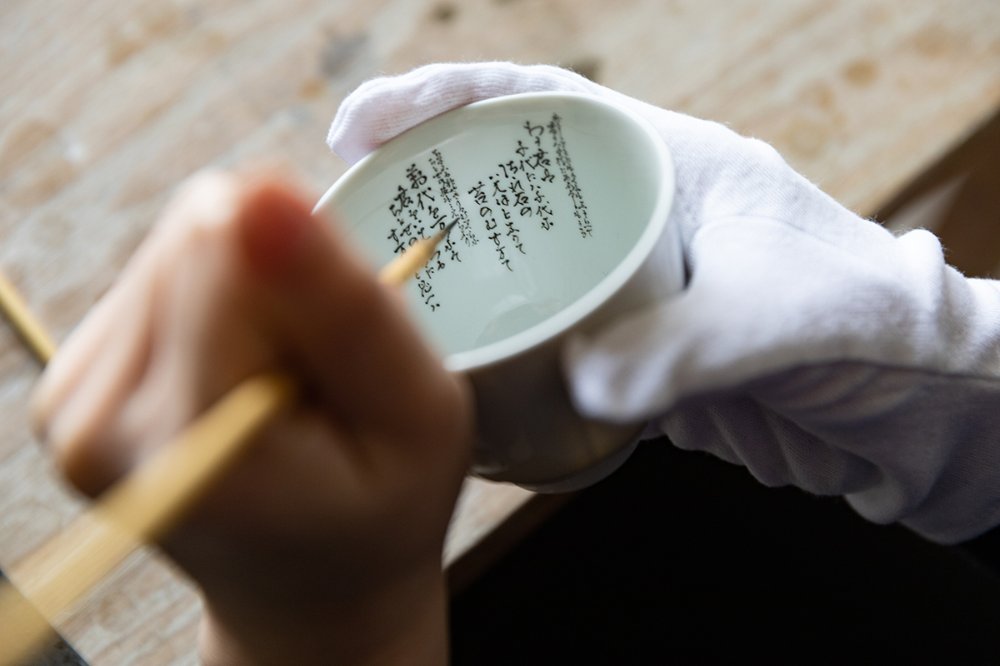
«Я начинаю с самого стихотворения, поэтому роспись и форма вещи часто связаны с его темой. Мне важно не только то, что знаки красивы как каллиграфия. Вещь должна быть цельной, и знаки должны делать её красивее»
Сэйто Тамура
Её работы называют божественным мастерством. На курильнице в каждой строке знаками в несколько миллиметров ровно выписано по одному стихотворению из антологии «Кокинсю». В бокале строки на внутренней стенке появляются, только когда его наклоняешь. Мастер вносит в традицию современный взгляд.
«Кутани-яки интересен тем, что он разнообразнее других керамических центров. Он не только хранит традицию, но и принимает людей со стороны и щедро делится с ними умением, поэтому всё время меняется. В этой среде я хочу оттачивать мастерство и найти выражение, до которого ещё никто не дошёл»
Сэйто Тамура
«Тоё Тамура»
- Адрес
- префектура Исикава, Комацу, Таканодо-мати, и-53
- Телефон
- +81 761-22-6767
- Цены / Вход
- посещение по договорённости
- Сайт
- tamuraseito.com
Ткань
ORIGINA CLOTH JACQUARD: жаккард на новый лад
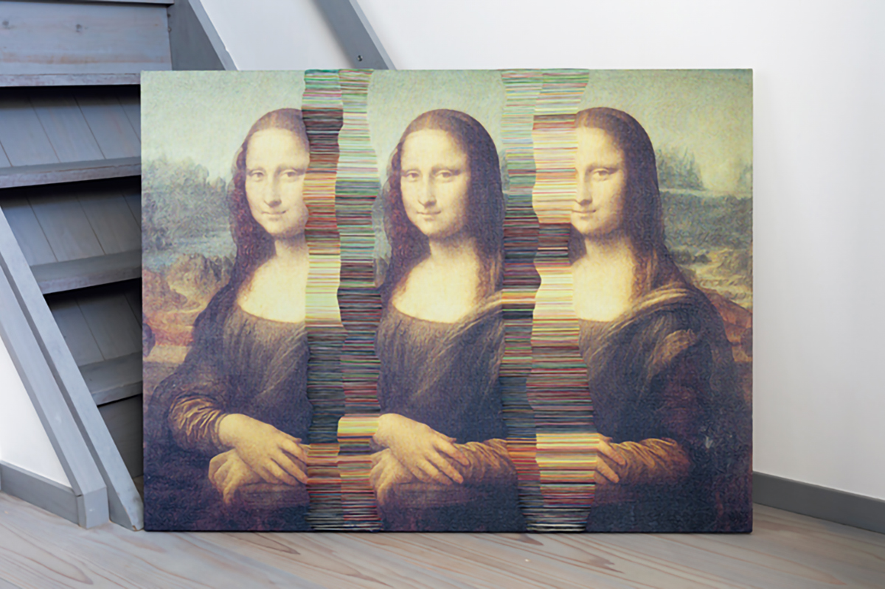
Ткачество в Исикаве ведёт свою историю от шёлка Кага эпохи Муромати (1336–1573). Со временем оно развивалось, и сегодня его знают во всём мире прежде всего по плотным синтетическим тканям. Ткацкая фабрика ORIGINA CLOTH JACQUARD с основания в 1979 году работает с жаккардом: ткань получает объёмный узор оттого, что нити основы поднимаются и опускаются относительно утка.
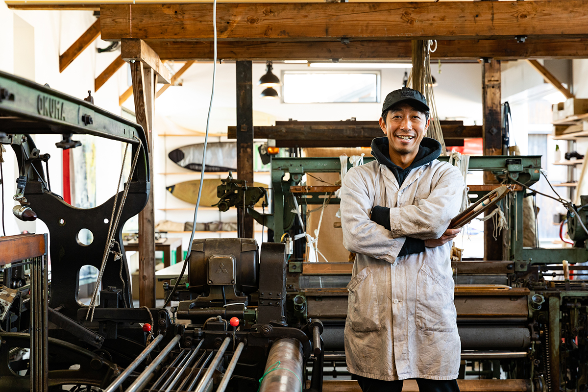
Фабрика умеет ткать и очень подробные изображения, и ткань с фактурой ручной работы, справляется с большими заказами. В отрасли, где каждый этап обычно делают разные компании, она сама ведёт всё: от замысла и рисунка до производства. Поэтому её ткани выбирают для штор крупного японского производителя мебели и для вещей спортивных марок.
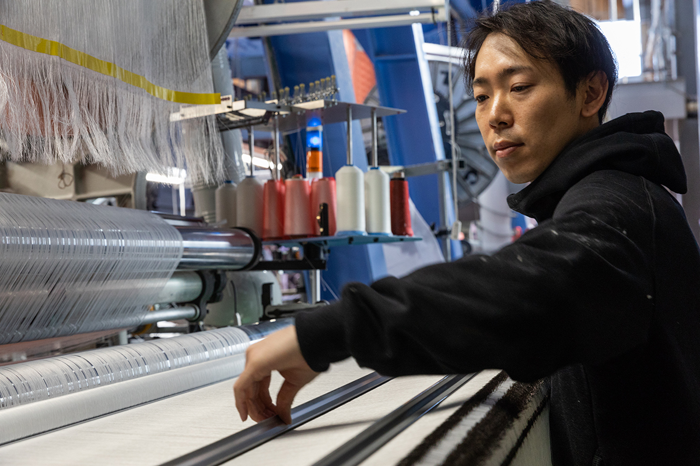
«Я хочу беречь традиции и гордость ткацкой фабрики, но говорить о жаккарде вещами, сделанными для нашего времени»
Сигэаки Араки
Фабрика ткёт тонкие художественные работы и гобелены для магазинов. Весной 2024 года она собиралась открыть галерею-кафе в бывшем цеху.
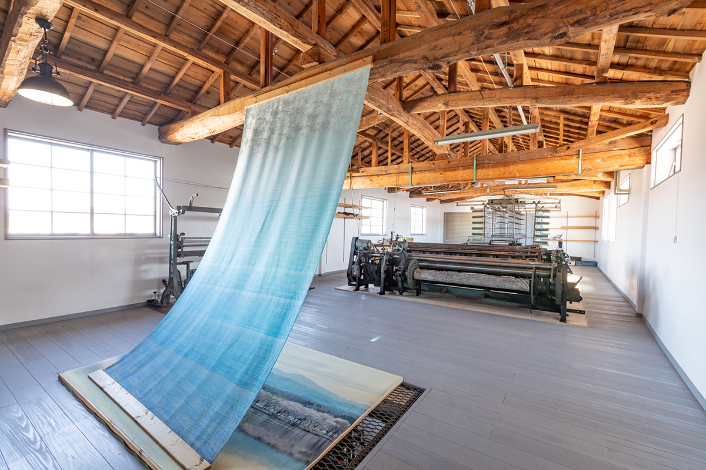
ORIGINA CLOTH JACQUARD
- Адрес
- префектура Исикава, Комацу, Хонго-мати, хэ-5-1
- Цены / Вход
- посещение по договорённости
- Сайт
- origina.co.jp
Железо
IRON WORKS KORU: одна вещь в день
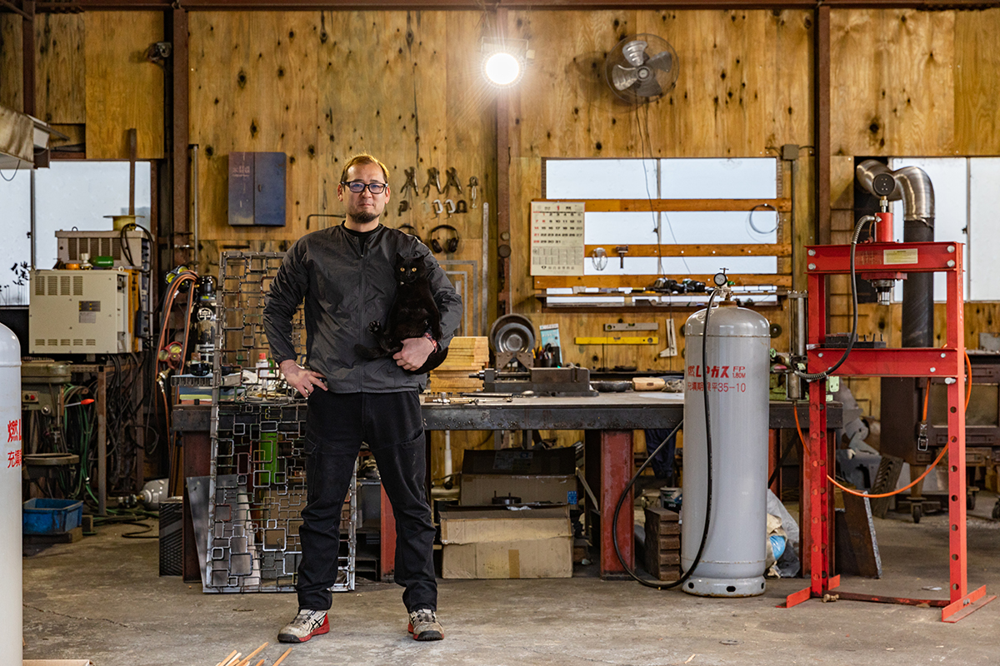
«Я так считаю: что может сделать кто-то другой, мне делать не обязательно»
Кэйта Сума
Это он говорит, перетаскивая стенное панно, собранное из металлолома по мотивам улиц Комацу. Кэйта Сума кузнец необычный. Он окончил строительное училище, а в двадцать с лишним лет хотел стать инструктором по сноуборду и кочевал по Японии и за её пределами. В тридцать лет он по случаю попал к кузнецам, через шесть лет вернулся домой и открыл IRON WORKS KORU.
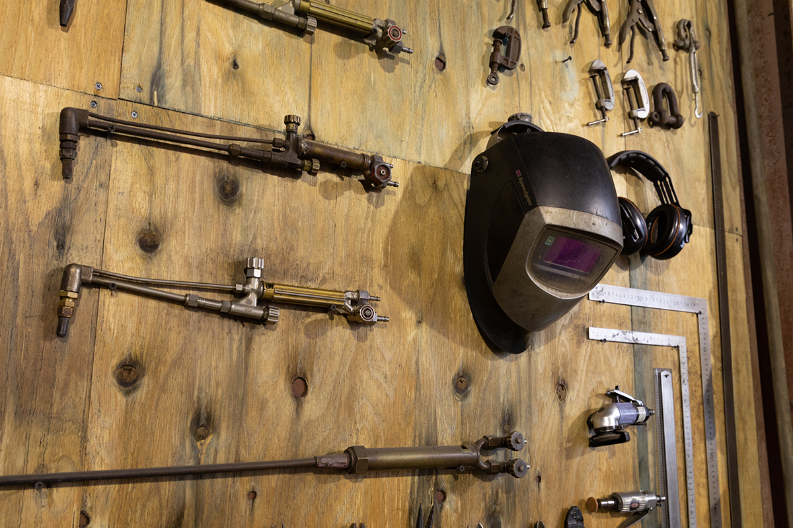
Мастерская делает на заказ железные вывески, торговое оборудование и мебель. Лазерный резак здесь не используют: только ручная газовая резка даёт то, что невозможно повторить.
«Если коротко, я плотник храмов, только по железу. Мне дают чертежи, я раскладываю детали и сам ставлю всё на место. Как не бывает двух одинаковых зданий, так я не делаю двух одинаковых вещей»
Кэйта Сума
Его сковороды пользуются большим успехом у любителей жизни на природе. Каждую он выковывает молотом и облегчает до предела. Кроме размера, двух одинаковых не бывает: каждая сделана в одном экземпляре.
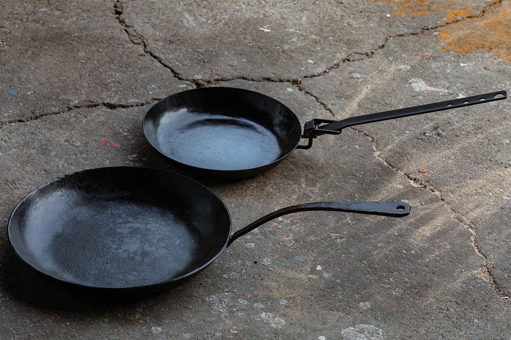
«Железное ремесло в этих краях началось с медных рудников. Но в Комацу и в других ремёслах сохранилась классическая техника, и это меня подстёгивает»
Кэйта Сума
IRON WORKS KORU
- Адрес
- префектура Исикава, Комацу, Сираэ-мати, ри-83-4
- Телефон
- +81 761-48-4198
- Часы работы
- 10:00–18:00
- Выходные
- понедельник
- Цены / Вход
- посещение по договорённости
Маршрут
Ещё Комацу: техника, камень, храмы и ночлег
Почувствовать здешнее ремесло можно и во многих других местах. Начать удобно прямо у турникетов станции Комацу, в центре Komatsu Nine. Выйдя наружу, сразу видишь огромную горную технику «Комацу» и понимаешь масштаб, с которым здесь делают вещи.
Komatsu Nine и «Комацу-но мори»
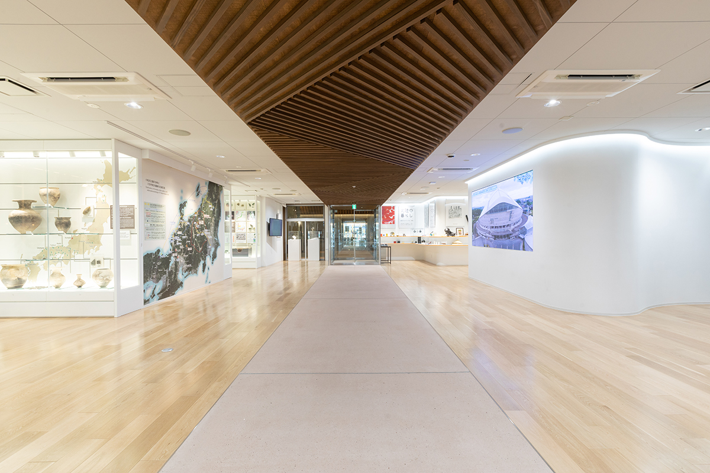
Komatsu Nine открылся в здании станции как место встречи людей, вещей и новостей. Здесь есть кафе, фудкорт, сувенирный магазин и место для совместной работы. В галерее выставлены каменные орудия и глиняная посуда, найденные на месте древнего поселения Ёкаити-дзиката, с которого начинается история ремёсел Комацу. Рассказ о здешнем ремесле и давних связях с другими краями хорошо подходит для первого знакомства.
Komatsu Nine
- Адрес
- префектура Исикава, Комацу, Доихара-мати, 13-18
- Телефон
- +81 761-58-2775
- Часы работы
- зависят от заведения
- Сайт
- komatsu9.jp
«Комацу-но мори» это комплекс компании «Комацу», где о её истории и технике рассказывают через выставки и занятия. На площадке стоят самосвал 930E высотой около 7 метров и гидравлический экскаватор высотой около 8 метров. В определённые часы можно подняться в кабину.
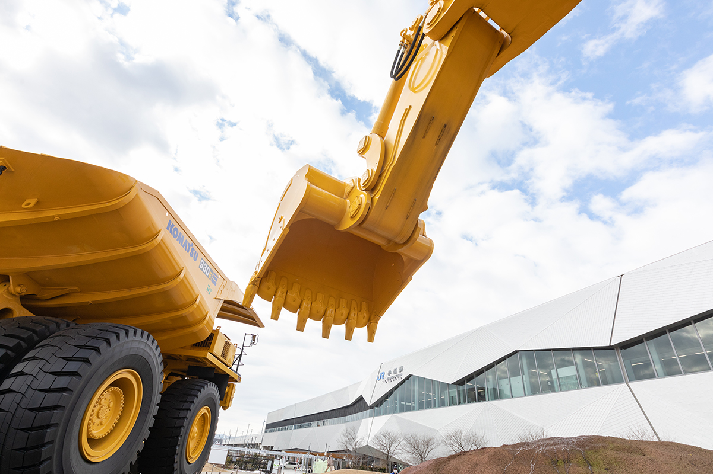
«Комацу-но мори»
- Адрес
- префектура Исикава, Комацу, Комацу-но мори, 1
- Телефон
- +81 761-24-2154
- Часы работы
- помещения 9:00–16:30 (вход до 16:00), парк «Гэнки сатояма» до 17:00
- Выходные
- понедельник, воскресенье, пятая суббота месяца
- Сайт
- komatsunomori.jp
Камень Комацу
Любителям камня стоит посмотреть на каменную кладку замка и на вид карьера Канконоси, который включён в число объектов японского наследия. От замка Комацу осталось основание башни главной цитадели. Его сложили из туфа Комацу и камня Томуро из Канадзавы, подгоняя блоки без зазоров. Узор кладки похож на лоскутное одеяло, а сверху виден весь город.
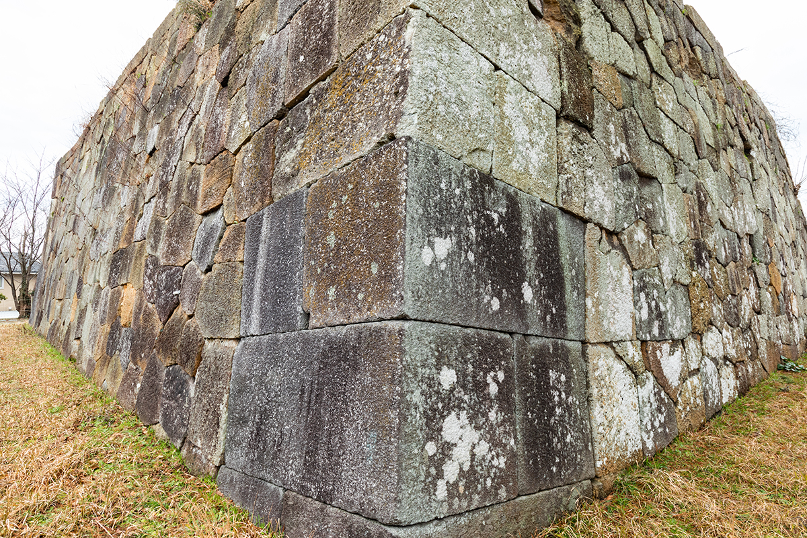
Основание башни замка Комацу
- Адрес
- префектура Исикава, Комацу, Маруноути-мати, Ниномару, 15
- Телефон
- +81 761-24-8130 (отдел культуры мэрии Комацу)
В карьере Канконоси долго добывали желтоватый камень никка, которым отделано, например, здание японского парламента. Каменные стены поднимаются больше чем на 50 метров, а рядом выставлены работы шотландского художника.
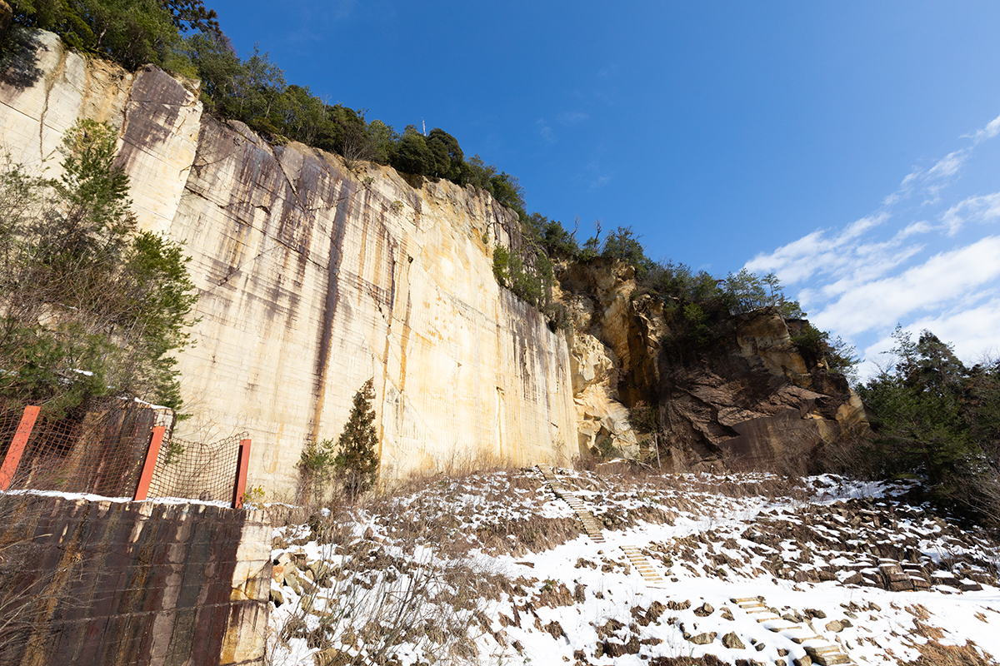
Карьер Канконоси
- Адрес
- префектура Исикава, Комацу, Канконоси-мати, хака-1-1
О сакэ Комацу и об оберже eaufeu, где собраны ремёсла города, мы рассказываем в отдельных статьях.
Храмы
Храм Натадэра, по преданию, основал в 717 году Тайтё (682–767), монах, который первым поднялся на гору Хакусан и положил начало её почитанию. Храм стоит среди природы и обязателен для тех, кто хочет понять веру в Хакусан. Главный зал и трёхъярусная пагода признаны важными культурными ценностями Японии, сад и скалы «Киган юсэнкё» охраняются как живописные места. Вокруг храма интересно гулять, рассматривая камень.
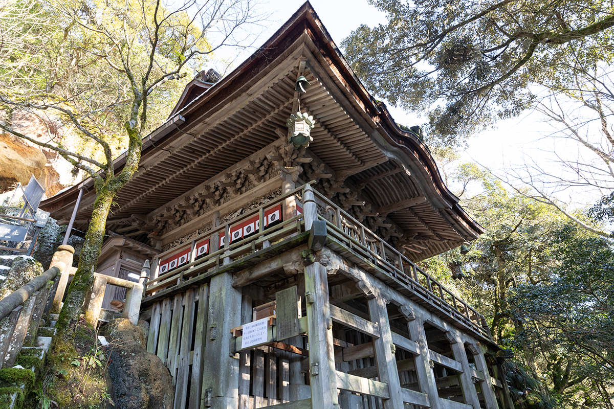
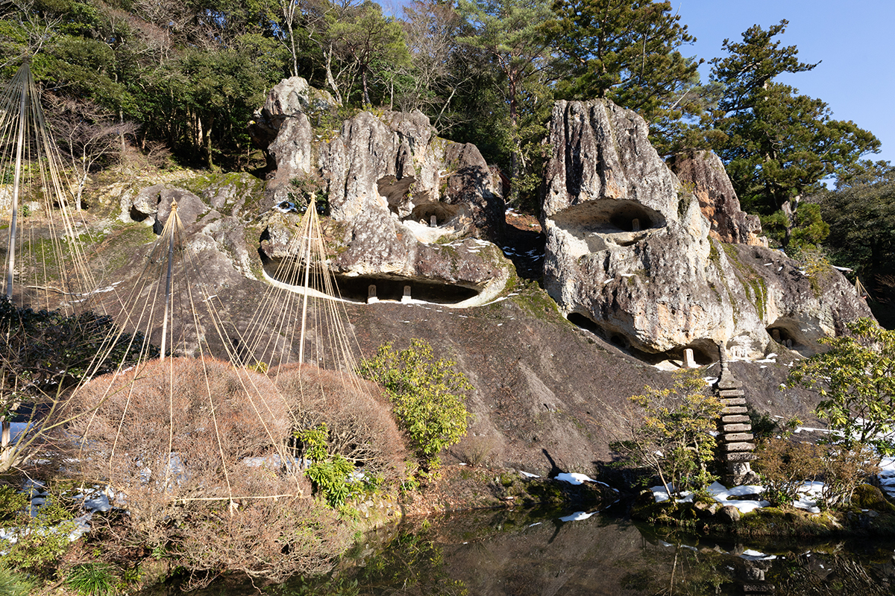
Храм Натадэра
- Адрес
- префектура Исикава, Комацу, Ната-мати, ю-122
- Телефон
- +81 761-65-2111
- Часы работы
- 9:15–16:00
- Выходные
- без выходных
- Цены / Вход
- взрослые 1000 иен, школьники младших классов 300 иен; особый осмотр (новый сад, камни Сансон, павильон Рёрёан) плюс 200 иен, для детей бесплатно
- Сайт
- natadera.com
Святилище Атака Сумиёси стоит на берегу Японского моря, и в старину его непременно посещали все, кто шёл по дороге Хокурикудо. Здесь почитают бога, который помогает преодолеть трудности, и такое святилище в Японии единственное. Слава эта идёт от предания, известного по пьесе «Кандзинтё»: полководец Ёсицунэ Минамото (1159–1189) и монах-воин Бэнкэй (умер в 1189 году) со спутниками сумели пройти мимо стражи заставы Атака. О заставе мы рассказываем в отдельной статье.
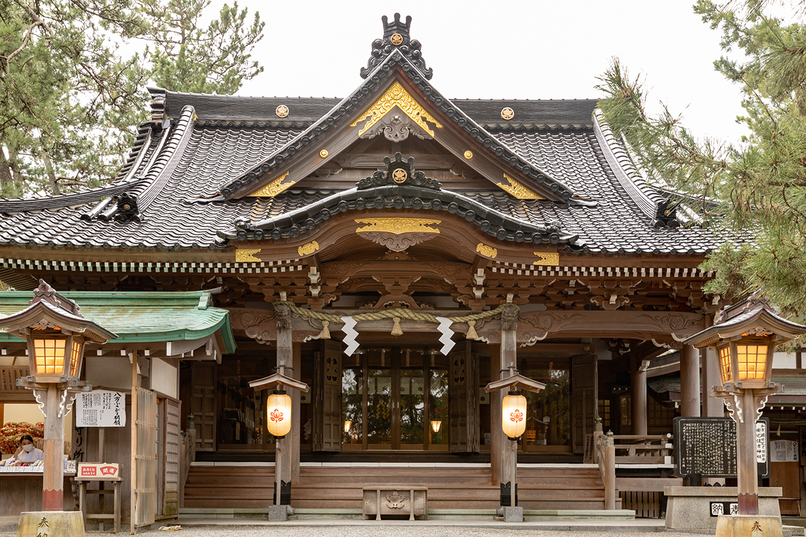
Святилище Атака Сумиёси
- Адрес
- префектура Исикава, Комацу, Атака-мати, та-17
- Телефон
- +81 761-22-8896
- Часы работы
- 8:30–17:00
- Выходные
- без выходных
- Цены / Вход
- бесплатно
- Сайт
- ataka.or.jp
Фарфор, овощи и ночлег
В CERABO KUTANI можно вблизи посмотреть, как делают Кутани-яки, попробовать лепку руками, работу на гончарном круге и роспись. Здание спроектировал Кэнго Кума, и внутри видно цех, где готовят глину для Кутани-яки. В магазине продают самый разный Кутани-яки: от традиционной надглазурной росписи до работ молодых мастеров.
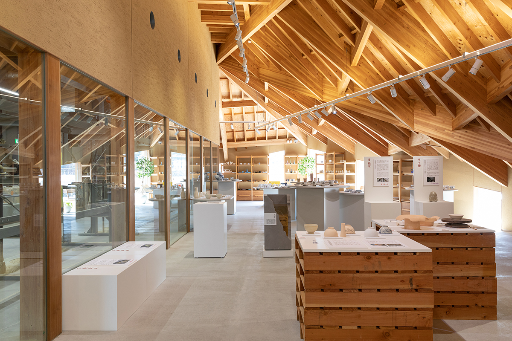
CERABO KUTANI
- Адрес
- префектура Исикава, Комацу, Вакасуги-мати, а-91
- Телефон
- +81 761-48-4235
- Часы работы
- 10:00–17:00 (вход до 16:30)
- Выходные
- с апреля по ноябрь среда, с декабря по март вторник и среда (если это праздник, то следующий день), новогодние праздники
- Цены / Вход
- взрослые 300 иен, школьники до старших классов 150 иен
Ферма tsugutsugu в горах Комацу растит овощи без пестицидов и химических удобрений. Удобрение здесь делают сами, смешивая рисовые отруби, жмых и рыбную муку, и овощи получаются с ярким, сильным вкусом.
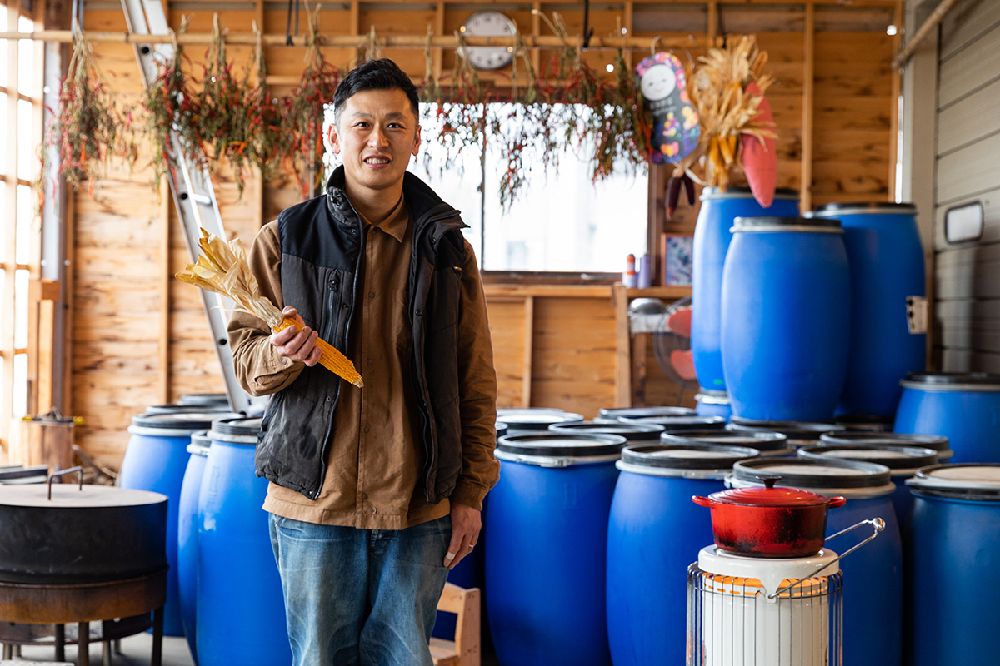
tsugutsugu
- Адрес
- префектура Исикава, Комацу, Накауми-мати, 12-198-3
- Телефон
- +81 90-3291-5704 (только по предварительной записи)
- Выходные
- суббота, воскресенье, бывают и другие выходные
Онсэн Авадзу считают старейшим онсэном Хокурику. По преданию, его открыли около 1300 лет назад по указанию того же монаха Тайтё, которому явилось божество горы Хакусан. «Хоси» одна из самых известных гостиниц этого онсэна: здесь берегут священный источник, глубокую красоту сада и старинные правила гостеприимства.
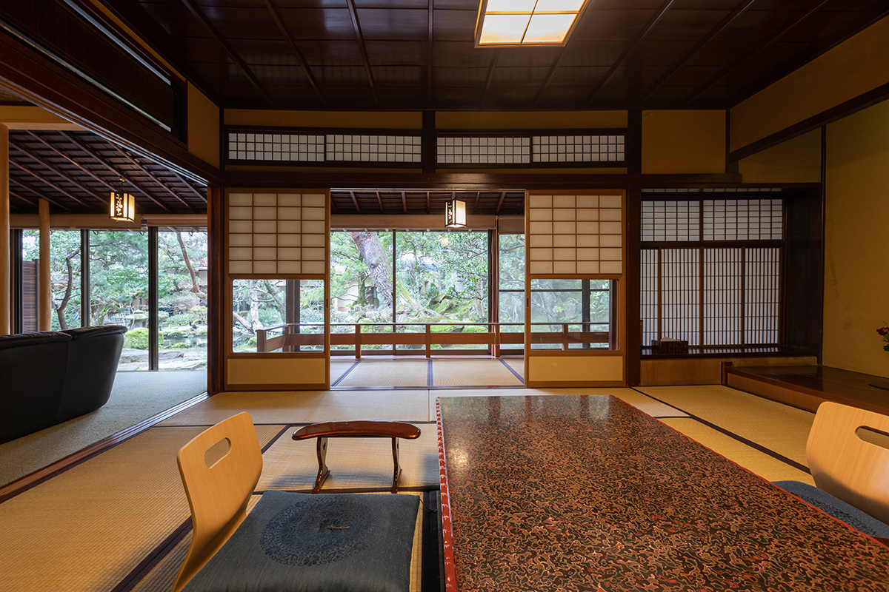
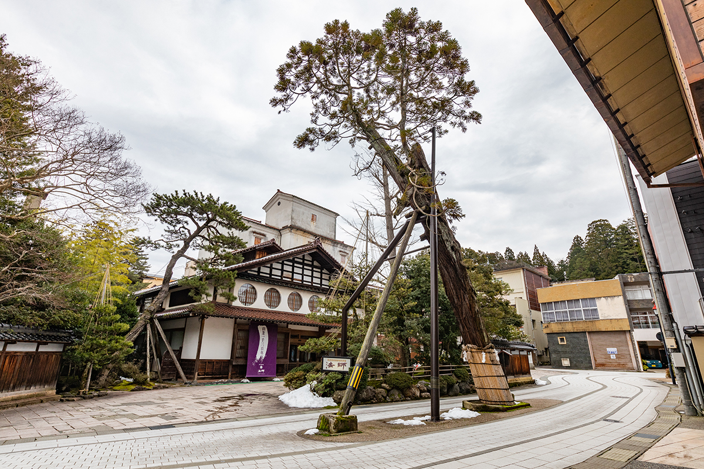
«Хоси»
- Адрес
- префектура Исикава, Комацу, Авадзу-мати, ва-46
- Телефон
- +81 761-65-1112 (бронирование, 10:00–18:00)
- Номера
- 41
- Цены / Вход
- номер без питания от 13 310 иен с налогом и сервисным сбором (2024 год)
- Сайт
- ho-shi.co.jp
В квартале Рюсукэ-мати, где хорошо сохранился облик старого замкового города, работает гостиница RYUSUKE25 в отремонтированном городском доме 90-летней давности. Гостей принимают не больше чем в двух номерах в день. Под высоким открытым потолком, среди сёдзи с решётками кумико и других вещей традиционных мастеров, здесь живут как дома.
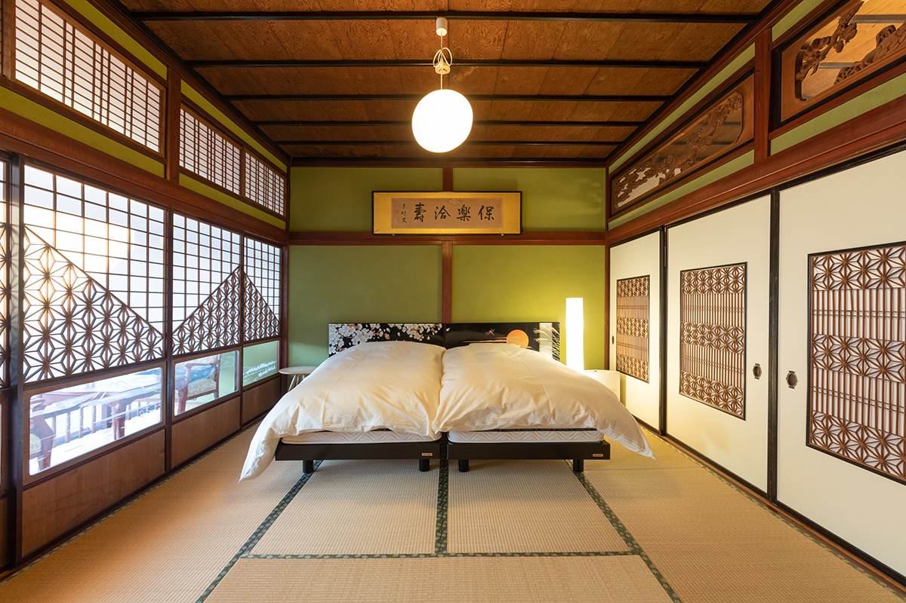
RYUSUKE25
- Адрес
- префектура Исикава, Комацу, Рюсукэ-мати, 25
- Телефон
- +81 70-8950-5306
- Номера
- 2
- Цены / Вход
- номер без питания от 30 000 иен с налогом и сервисным сбором (2024 год)
- Сайт
- ryusuke25.com
Из Токио до Комацу около 2 часов 40 минут на синкансэне, из Син-Осаки около 2 часов 30 минут на поезде, из аэропорта Ханэда около 1 часа 5 минут самолётом. В марте 2024 года, вместе с продлением синкансэна, между станцией Комацу и аэропортом Комацу пустили беспилотный автобус.
Фото: Норихито Судзуки.